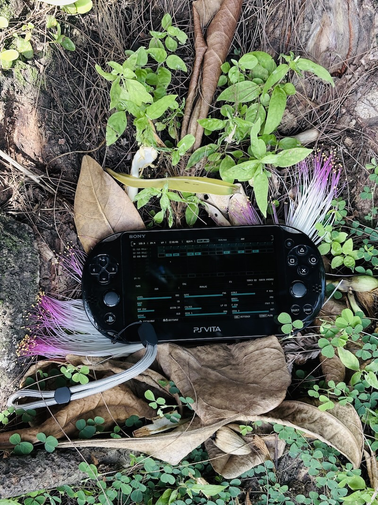

Homebrew drum synth and performance groovebox for PS Vita
DS-8
DRUMSTREAM
Drumstream turns the PS Vita console into an eight-track drum synthesizer, sampler, and performance groovebox.
Built for sketching grooves, arranging songs, recording and resampling audio, performing with Live FX, and routing multitrack audio over USB.
DS-8 Drumstream is independent homebrew software. It is not affiliated with, sponsored by, endorsed by, or connected to Sony Interactive Entertainment, Sony Group Corporation, PlayStation, or PS Vita trademarks.
/ Overview ■
From first hit to finished performance.
Start by shaping a drum sound or recording a sample. Place it in a pattern, add movement with automation and Step FX, then turn that pattern into an arrangement you can perform.
DS-8 keeps that entire path inside the Vita. Physical controls stay close to the music, projects preserve the full idea, and performance tools remain ready without breaking the flow.
Real-time drum engines
Shape kicks, snares, toms, zaps, hi-hats, and FM voices in real time, with focused controls for tuning, weight, noise, decay, and character.
64-step pattern control
Place hits quickly, extend ideas across up to sixty-four steps, and add variation with automation, conditions, generation, mute, and solo.
Record and resample
Capture with the Vita microphone, import audio, or resample the running groove directly into the SP track for another round of shaping.
Projects and presets
Save the complete musical state, return to works in progress, and preview sounds before bringing them into the current project.
/ Sampler ■
The SP track brings recording, slicing, and resampling into the pattern.
Record with the Vita microphone, import audio, or capture the running engine directly. Trim, slice, shape, and place the result back into the pattern without leaving DS-8.
Waveform editor
Trim, crop, inspect the waveform, and prepare recordings without leaving the device.
Slice editor
Detect transients, create grid slices, and shape each slice with ADSR and reverse playback.
Tone controls
Shape every sample with bass, mid, treble, low-pass, and high-pass controls before it returns to the pattern.
One-shot mode
Trigger samples directly for drum hits, stabs, captured phrases, and performance gestures.

/ Feature set ■
Built for fast rhythm decisions.
Move from detailed sequencing to complete arrangements and live manipulation without turning the handheld workflow into a menu exercise.
USB multitrack out
With the companion USB plugin installed, send individual drum tracks to a recorder or DAW for separate mixing, processing, and capture.
USB audio sampling
With the companion USB plugin installed, bring external audio directly into the sampler for recording, trimming, slicing, and resampling.
Arranger mode
Build song structures from patterns, set repeat counts, launch sections, and manage lane mutes from one performance view.
Live FX
Shape real-time effects with the XY performance area, BPM-synced delay, DUCKER, repeat, comb, and DJ filter.
/ DS-8 approach ■
Keep the musical decision in reach.
DS-8 is designed around the transitions that usually interrupt a groove: shaping a sound, placing it, developing the pattern, arranging it, and performing it.
Immediate control
Edit sounds, steps, mutes, and effects while the pattern keeps moving, with the Vita controls doing the work.
One continuous workflow
Synthesis, sampling, sequencing, automation, arranging, and performance remain parts of the same instrument.
Portable performance
Arranger controls, mutes, pattern launches, and Live FX turn a saved idea into something ready to play.
Save the whole idea
Projects preserve sounds, patterns, arrangements, automation, and performance settings so the complete track can travel with you.
/ Documentation ■
Read the DS-8 user manual.
User manual
DS-8 User Manual
Required USB kernel-plugin installation, USB audio and MIDI, PS Vita controls, transport, projects, sequencing, Step FX, sampling, arranger performance, and quick-reference tables.
/ Disclaimer
Independent homebrew software.
DS-8 Drumstream is closed-source homebrew software and requires a modified PS Vita capable of installing .vpk files.
DS-8 Drumstream and Intermynd Instruments are not affiliated with, sponsored by, endorsed by, or connected to Sony Interactive Entertainment, Sony Group Corporation, PlayStation, or PS Vita trademarks. Product names and trademarks belong to their respective owners and are used only to describe platform compatibility.
DS-8 is in active development. Bugs, rough edges, performance behavior, audio behavior, project compatibility, and controls may change in future releases.
/ Download
Get DS-8 for PS Vita.
The latest public download is hosted on Itch.io. Install only if you understand the homebrew requirements for your Vita.
Developer note
The companion USB plugin is open source.
DS-8 itself is closed-source software. The separate PS Vita USB Audio + MIDI plugin is available for developers who want to explore or extend USB audio work on the Vita.